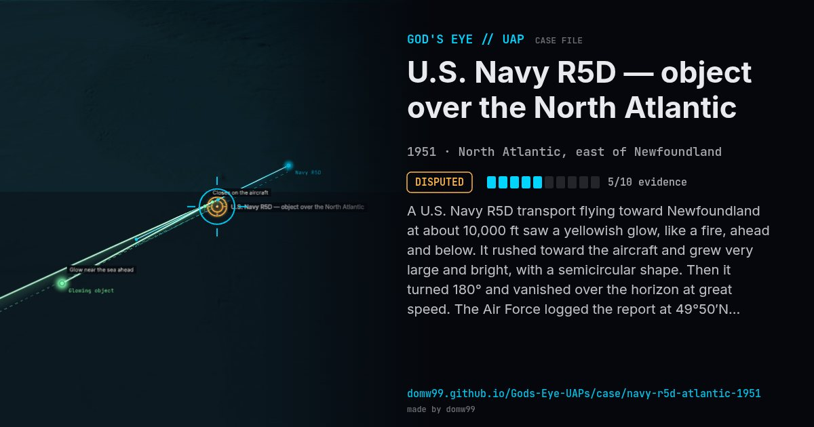

U.S. Navy R5D — object over the North Atlantic
DISPUTED

A U.S. Navy R5D transport flying toward Newfoundland at about 10,000 ft saw a yellowish glow, like a fire, ahead and below. It rushed toward the aircraft and grew very large and bright, with a semicircular shape. Then it turned 180° and vanished over the horizon at great speed. The Air Force logged the report at 49°50′N 50°03′W. Crew member Lt. Graham Bethune later described it publicly.
Explanation
The Blue Book record card gives its consulting astronomer's view that the crew saw an astronomical display. The crew said it was a solid object that came up to meet them.
What was seen
Shape: Huge yellowish glow, semicircular
Witnesses: Navy flight crew and passengers
Duration: 7–8 minutes